Every word equal
The eye has nowhere to land. Eight lines feel like eight tasks.
Stay on one screen. Do not scroll. Do not explain yet.
Not the brand. Not “home.” The thing this page is.
If this screen was deleted tonight, what job would fail tomorrow?
No design words. If you need “UI” or “UX” to say it, you do not know it yet.
Point. Do not describe. If you cannot point, the screen is a poster.
A fact? A choice? Nothing — just a tap?
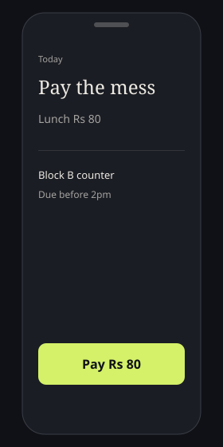
A weak reading
It's PhonePe. Home.
Good UI. The brand needs a screen.
The green button.
More options. A menu.
A sharp reading
Pay today's mess lunch.
If this is gone, they cannot pay at the counter without cash.
Pay Rs 80.
Nothing. The amount is known. Just the tap.
What is the screen? Why does it exist? If you cannot answer, do not draw yet.
A [person] can [task] without [barrier].
figma.com · education plan if you have a student emailProblem 1
Loose rectangles on an infinite canvas are not a product. Press F. Size 390 × 844. Name the frame with your sentence.
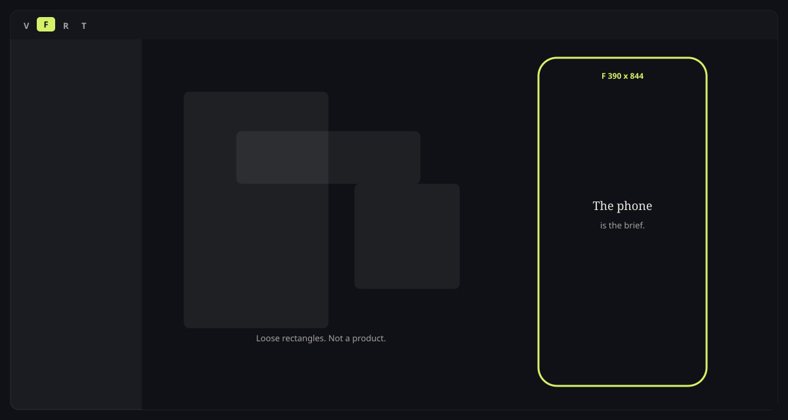
If you get lost, press V. Zoom with ⌘0. Undo with ⌘Z.
F · 390 × 844 · name it the sentenceOn that phone, write three lines: the job, one fact, what happens next. Nothing else.
T · type · then change the size on the right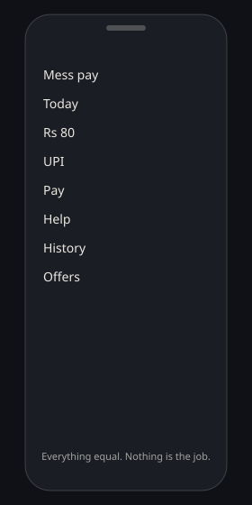
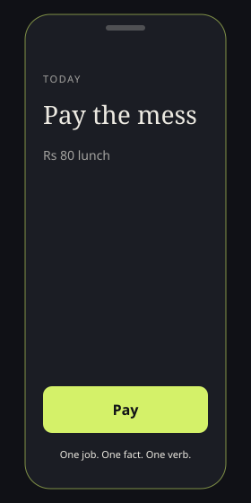
The improvement
The eye has nowhere to land. Eight lines feel like eight tasks.
Big type is the job. Small type is the helper. One commit at the thumb.
UI ranks what matters. Miller: working memory cannot hold a crowd of equals. Make the job biggest on yours.
Look at yours. If a stranger cannot see the verb from two metres, the type is not doing UI yet.
The right panel
Select the line. Change the number. Do not hunt fonts. Hierarchy is a size decision.
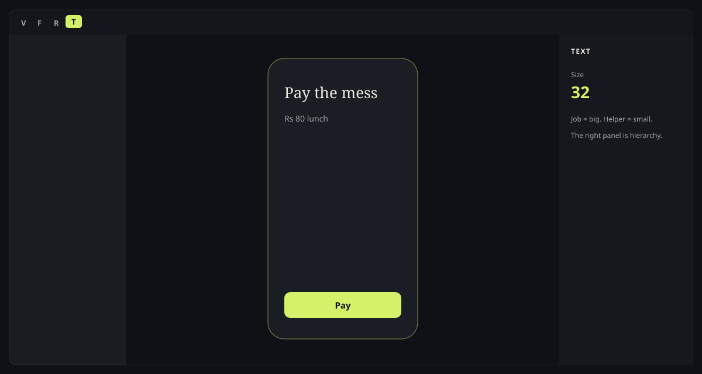
One rectangle. One word from your sentence. Bottom of the phone. Wide.
R · rectangle · fill it · T on top of it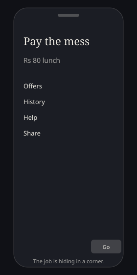
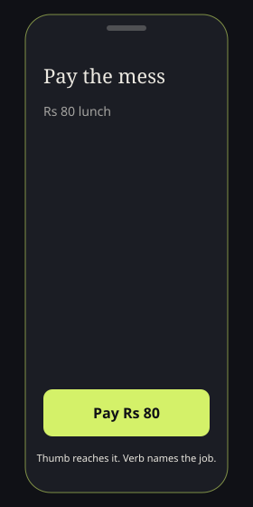
The improvement
“Go” does not name the job. The thumb cannot reach a tiny target far away.
Pay Rs 80 is the sentence. The control looks tappable. The thumb lands on it.
UI: the commit is a button with a verb. Fitts: bigger, closer, faster. Von Restorff: the odd one is remembered. One lime. The rest stay quiet.
Look at yours. Is the verb a speck, or the thing the thumb wants?
Draw one field. Label above it. One line of help under it. Delete every field this step does not need.
R for the box · T for the question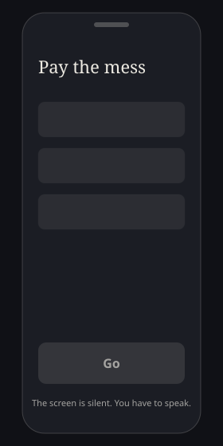
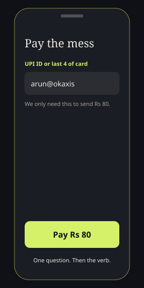
The improvement
Three boxes. No label. You have to speak for the screen. Extra fields this step does not need.
Label above. Helper below. Then the verb. It looks like a form they already know.
UI: label, field, helper. Jakob: forms they already know. Tesler: do not dump the system's work on them. Miller: this step only. Delete the rest.
Look at yours. If you have to speak the label, the screen is mute.
If they must pick, draw two or three. Mark a default. If they can skip, write that on the frame. Do not invent eight equals.
⌘D · duplicate one row · change the words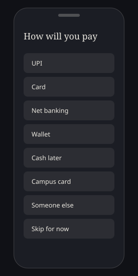
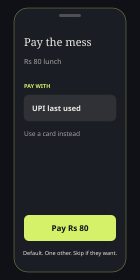
The improvement
Every row looks as important as every other. The person stalls. The job waits.
Last used is already chosen. A quieter way out. Skip is allowed. The verb stays primary.
UI: a list or cards is a choice, not a catalogue. Hick: time to choose grows with equal options. Mark a default on yours, or write skip.
Look at yours. Is there a default, or a menu of everything?
Duplicate the phone twice. One: nothing is there yet. One: they already tapped. Change only what happened.
select the frame · ⌘D · ⌘D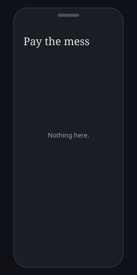
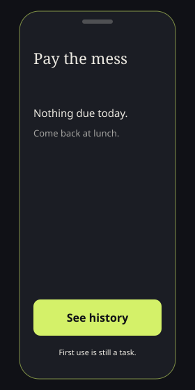
The improvement
A blank phone. No next action. The person thinks the product is broken.
Nothing due today. Come back at lunch. See history is still a way through.
UI: empty is a state with a verb. Norman: the system must speak. Duplicate your frame. Delete the stuff. Keep a tap.
Look at yours. If they open it the first time, can they still do something?
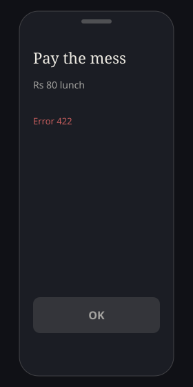
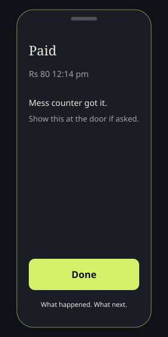
The improvement
Blame with a code. No fix. They do not know if lunch was paid.
What happened. When. What to do at the door. Done is the way out.
UI: after is feedback. Postel: accept a real UPI; be strict in what you store. If a real number failed, the form was strict in the wrong place.
Look at yours. Duplicate the frame. Change only what happened.
The move
Do not redraw the phone. Select the frame. ⌘D. Keep the job. Change the state.
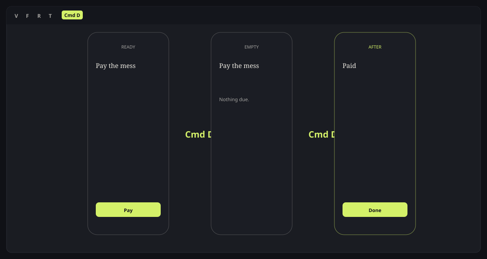
On every frame
Then it has a name
Prototype tab. Drag from the verb to the after frame. Press play.
one noodle · no Smart Animate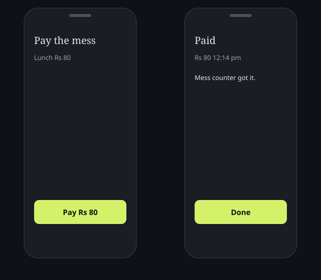
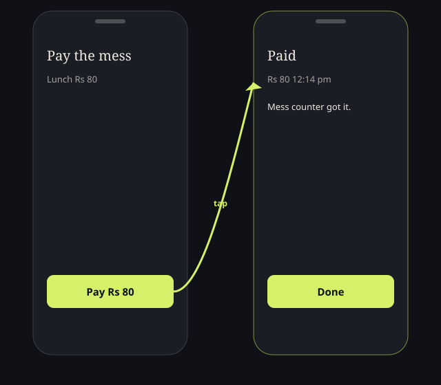
The improvement
The frames sit. They tap Pay. Nothing moves. A stranger cannot finish.
The verb goes to after. Done is a way out. That is a simple pay UX they can play.
UI: a prototype is a tap that lands. Feedback: they feel what the system did. Wire yours. Play it.
Look at yours. Press play. If the verb does not land, it is not a product yet.
The move
Top right: Prototype. Click the verb. Drag to the after frame. Press the triangle. One flow.
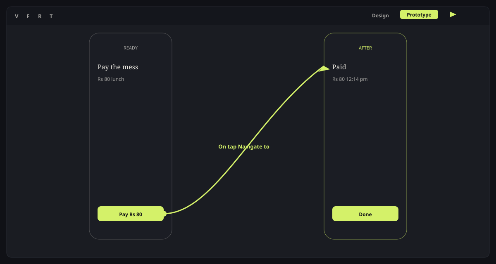
Can you read it if you squint? Does the label sit on the field? Does the tap look like a tap?
no new frame · fix the one you have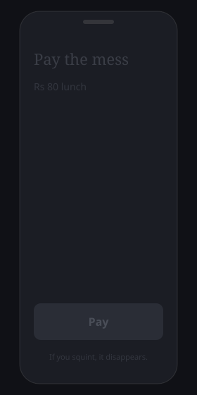
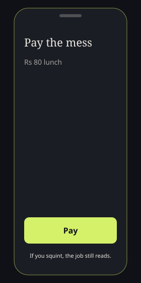
The improvement
Pretty in a dark room. Dead in sun, from the back row, or with tired eyes.
Paper on ink. Lime on dark. Helper is quieter, not invisible.
UI fundamental: type must beat the background. Not decoration. If they cannot read it, there is no interface.
Look at yours. Squint. If the verb disappears, raise the contrast.
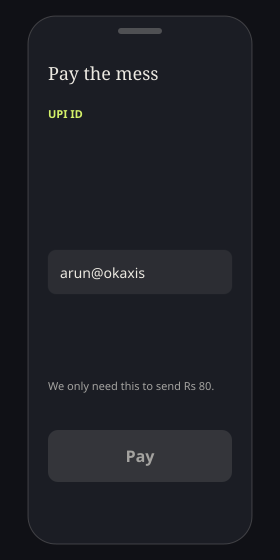
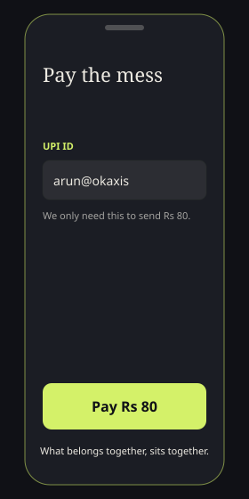
The improvement
The question and the box are strangers. The helper is an orphan at the bottom.
Label, field, helper as one unit. Then a gap. Then the verb.
UI: grouping is meaning. Gestalt proximity: nearness says “these belong.” Pull the label onto the field on yours.
Look at yours. If a label could belong to two boxes, the grouping has failed.
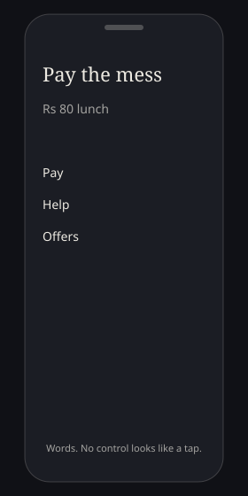
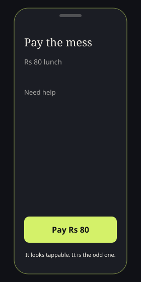
The improvement
Pay, Help, Offers. All type. None of them look like a control. The wallet already taught this.
A filled rectangle. A verb. One odd colour. Help stays a line of type.
Affordance: it can be tapped. Signifier: it looks like it can. Von Restorff: the odd one is the one they remember. Make one thing look like the job.
Look at yours. Could a stranger tap without you pointing?
After you tried
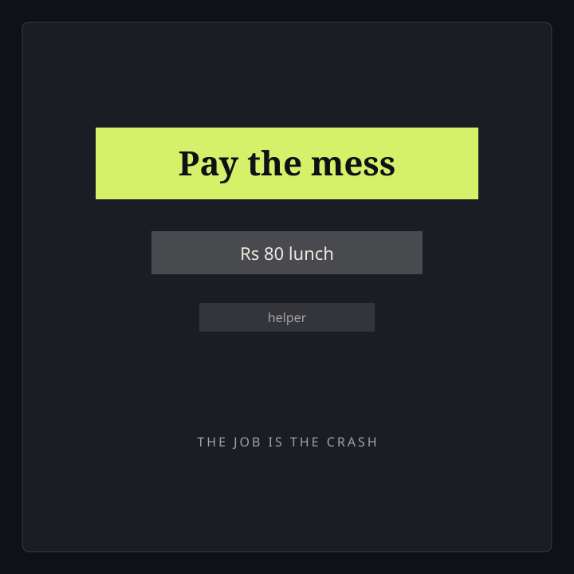
Hierarchy
You get the crash from across the canteen. You do not get the classifieds.
On yours. Pay the mess is the crash. Lunch Rs 80 is the caption.
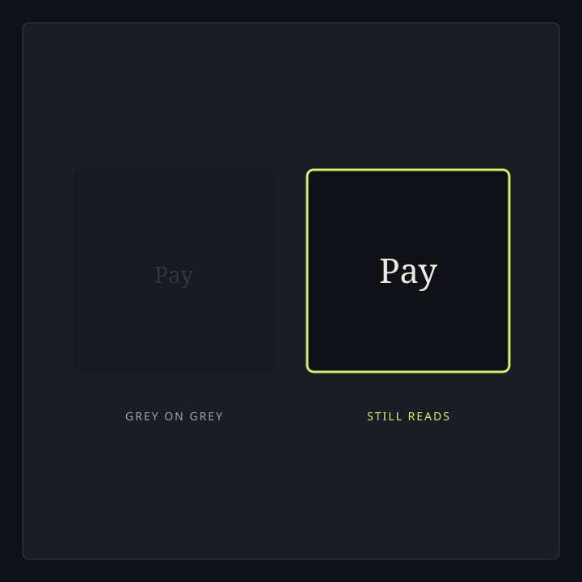
Contrast
Chalk on a dusty board dies at the last bench. Marker on white still reads.
On yours. Grey Pay dies in the courtyard at 1pm. Lime on dark still reads from the back row.
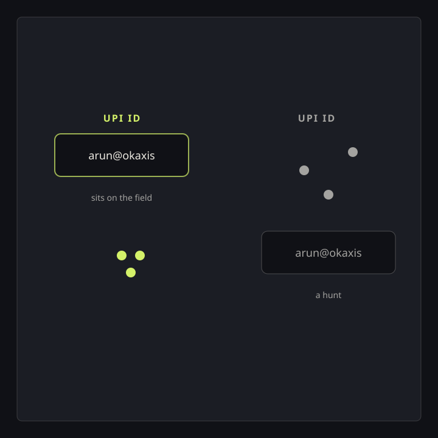
Proximity
Salt sits with the food. Salt at the sink is a hunt.
On yours. UPI ID sits on the box. A label at the top and a field at the thumb are strangers.
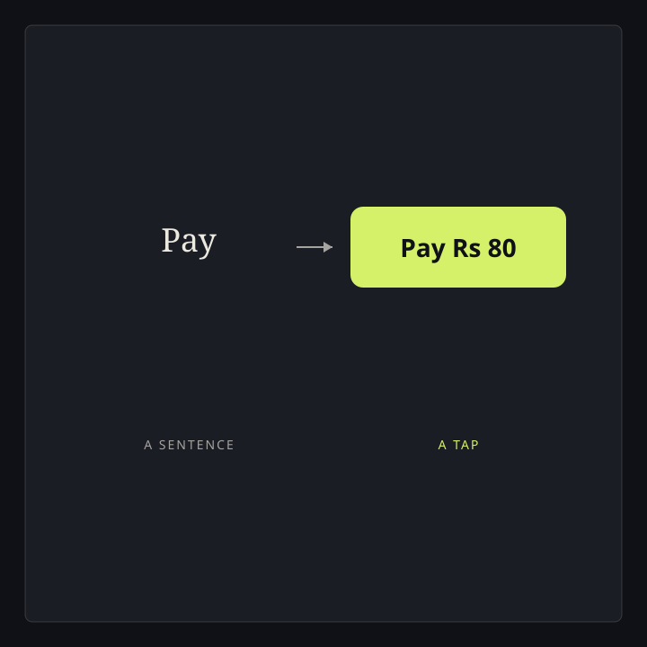
Signifier
A handle says pull. A flat plate says push. A blank door makes you look stupid.
On yours. A filled lime block looks like a tap. The word Pay as a sentence is a poster.
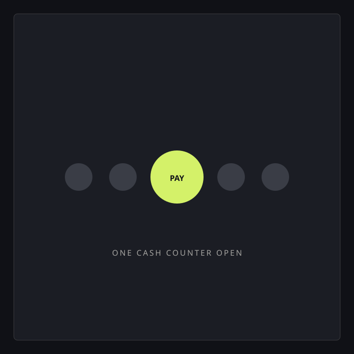
One primary
One cash counter open. Five equal counters, and the queue splits into a fight.
On yours. One lime Pay Rs 80. Help and Offers stay lines of type.
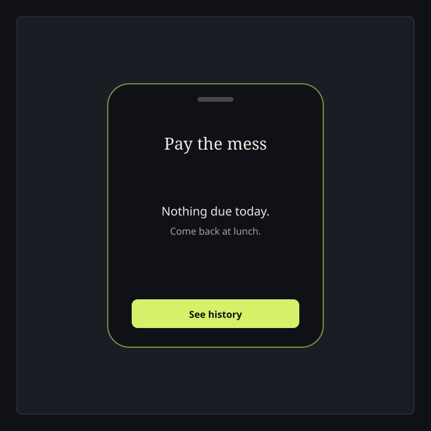
Empty / after
Empty fridge, a note: Milk. Here's the list. A blank fridge, you just stare.
On yours. Nothing due still has a tap. After Pay: Paid. Rs 80. 12:14. Done.
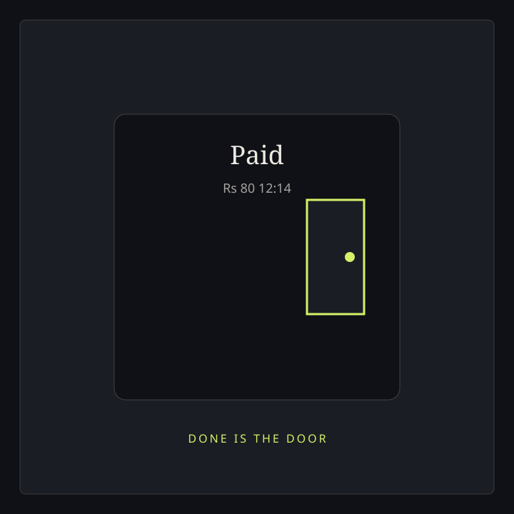
Way out
A lift that will not open. You paid. You are trapped.
On yours. Done, Back, or Skip on every frame. A pay screen with no exit is a locked counter.
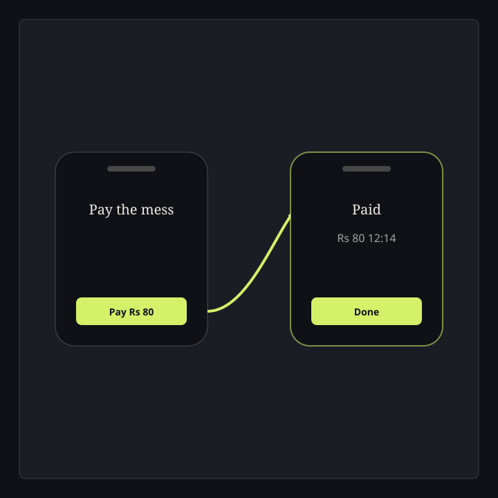
Prototype
A light switch that is not wired. You flip it. The room stays dark.
On yours. Play. Tap Pay Rs 80. Land on Paid. If nothing moves, you drew a poster.
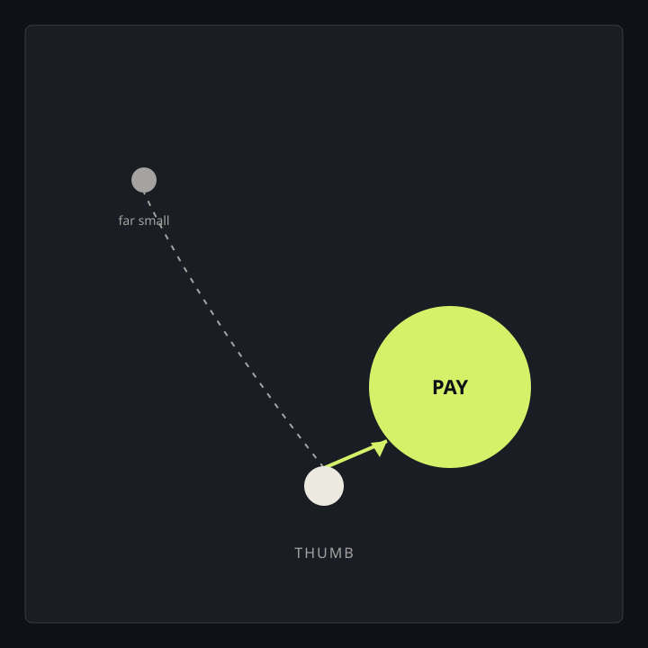
Fitts
The time to hit a target is how far it is, and how small it is.
On yours. Pay Rs 80 is wide at the thumb. A speck Go in the corner is a miss.
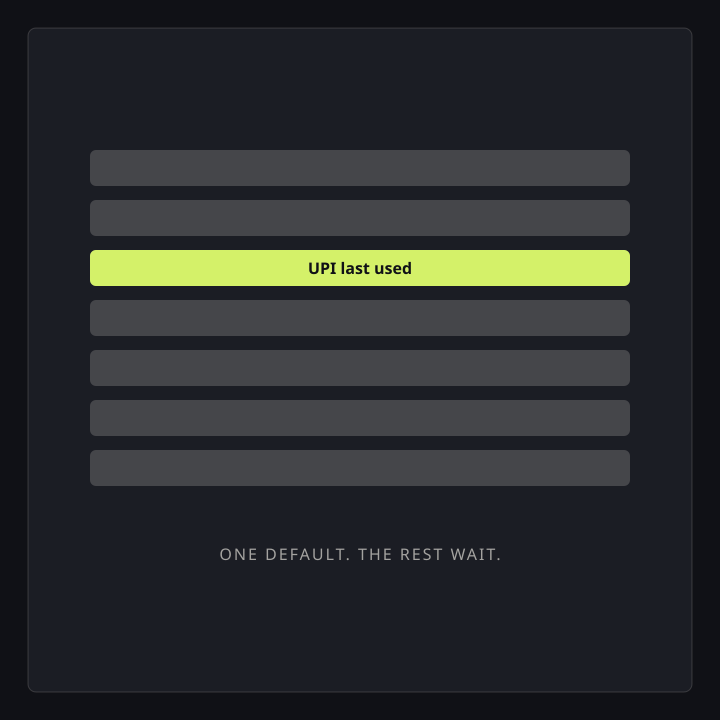
Hick
Two chutneys, you pick. A thali with eighteen bowls, you freeze.
On yours. UPI last used is already chosen. Eight equal payment rows stall lunch.
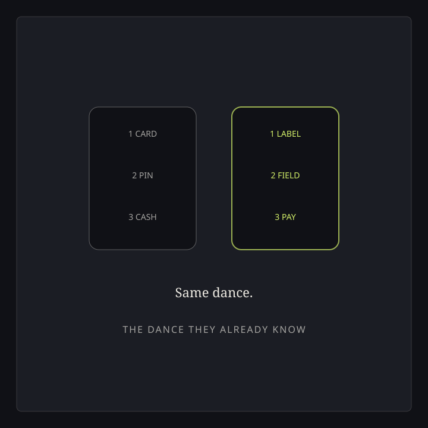
Jakob
Every ATM: card, PIN, cash. The one that invents a new dance loses the queue.
On yours. Label above the field, like every UPI they have used.
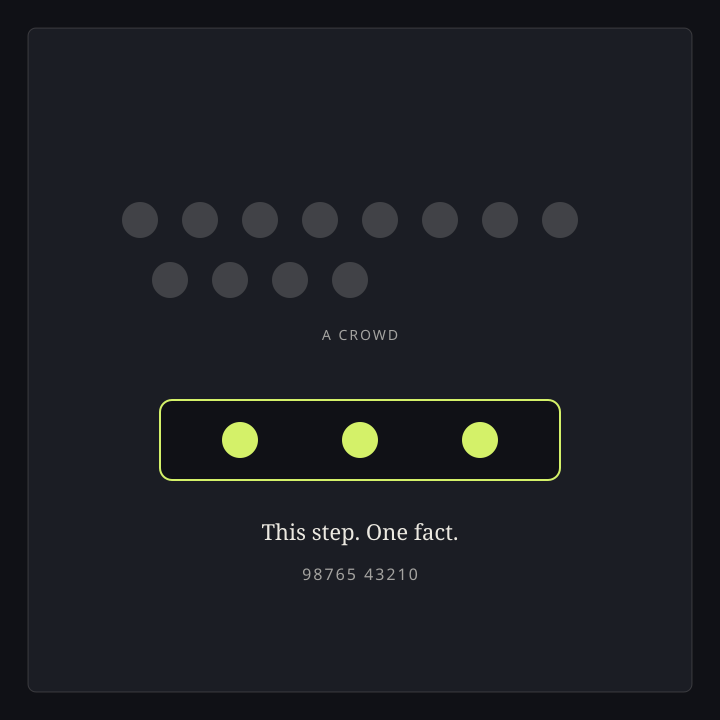
Miller
A phone number in chunks: 98765 43210. Ten digits in one blob, you lose the middle.
On yours. This screen asks for one fact. Twelve boxes is a crowd working memory cannot hold.
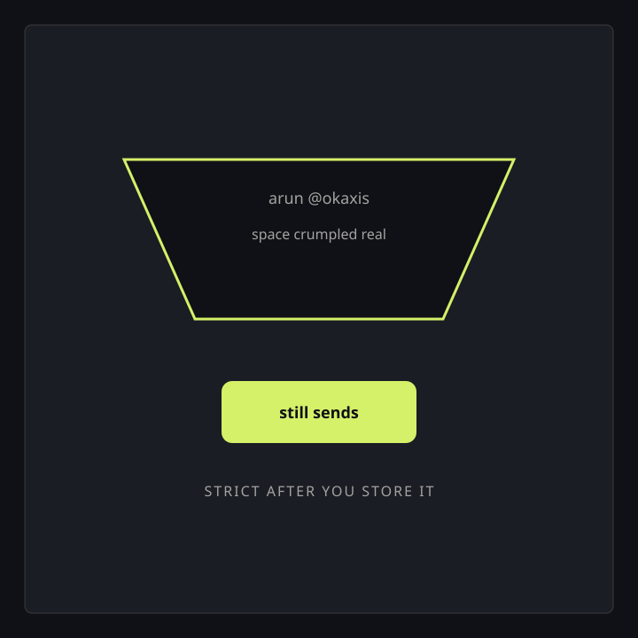
Postel
The canteen still takes a crumpled note. They do not send you back for a crisp one.
On yours. A real UPI with a space still sends. Rejecting arun @okaxis is strict in the wrong place.
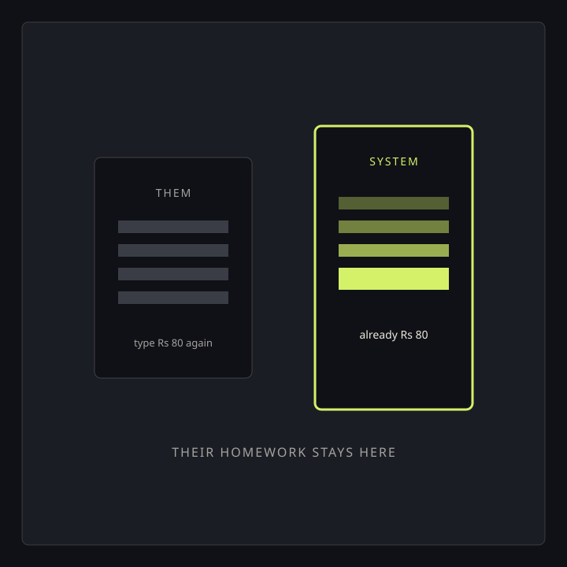
Tesler
The cashier already knows the thali is Rs 80. Asking you to add it up is their homework on your time.
On yours. The mess already knows Rs 80. Making them type the amount again is your complexity on their thumb.
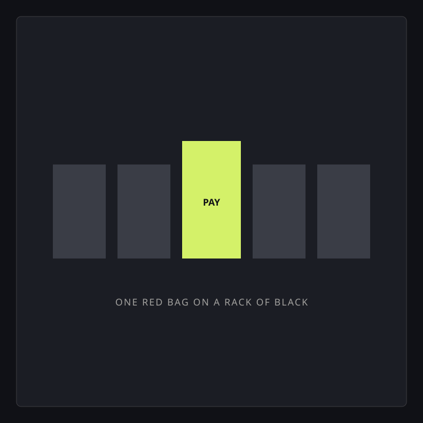
Von Restorff
One red bag on a rack of black. That is the one you find.
On yours. One lime Pay. Two lime buttons cancel each other.
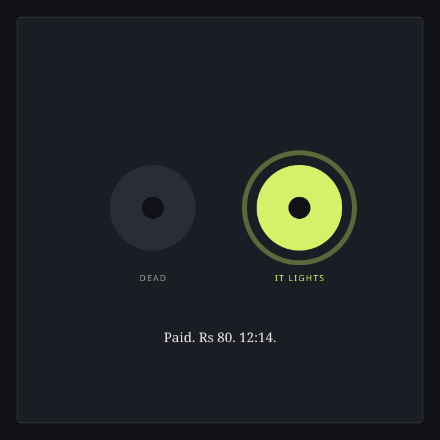
Feedback
You press the lift. It lights. You wait. A dead button, you press it six times.
On yours. After tap: Paid. Rs 80. 12:14. Show this at the door. Error 422 then OK says nothing.
On the phone
On Figma
The ritual
They tap your verb. You do not talk. Log: done / stuck / where. Then three stickies: the change, and a name from the wall — a UI fundamental or a law.
01
The sentence. V1 and V2, same page
02
Empty. After. Play Pay to after
03
Three stickies: change + law
04
View link. Private window
Share
Share → anyone with the link can view. Paste it. Open it in a private window. If they can tap the verb and see what happened, stop.
The file is the evidence. The names wait until the job works.